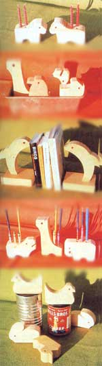

My husband and I operate a "pocketsized" woodshop in which we produce easels and small wooden blocks for children. And, like everyone else's shop, ours always seems to have a box sitting in the corner someplace ... filled with scraps of wood that are too small to use in our regular items.
Unlike everyone else, though, I began (back in 1967) designing a line of simple animals that could be constructed from precisely the shortends and other "waste" left over from our main projects.
The animals were an immediate hit. They combine happily with blocks and other toys, they stack, they encourage creativity, and the little folks who play with them generally find them educational too. We've also been pleased to learn that parents and teachers usually consider one of the wooden figures worth a whole p ile of plastic ones (there seems to be sort of an "heirloom factor" involved here somewhere).
Our little animals are so easy to make that anyone with a drill press, band saw, and sander will find them a snap. And, if you don't have that sort of equipment, there's nothing to keep you from creating the wooden critters with a simple coping saw, hand drill, and sandpaper. You'll naturally work somewhat slower but if you take care as you go, your final products should be quite respectable.
When Homer and I are turning out our regular lines, he handles the rip saw and other mechanical monsters and I do my share by running the band saw and sander. As we go along, we both set aside any scraps that are large enough for the construction of one or more of our little beasties. Experience has shown that we can even use pieces of wood that contain minor knots and small cracks. We simply fill the defects with a mixture of glue and sawdust, and the irregularities add texture to the natural look of the finished toys.
Most of our designs are cut from pieces of wood measuring no more than 1-1/2" thick by 3-1/8" by 4-3/4". (This keeps the completed animals small enough-yet thick enough-for tiny hands to stack easily.) Short-ends of almost any hard or semi-hardwood will do. Red alder is perfect if you can get it, although we're presently using Alaska yellow cedar (which isn't a true hardwood but is tough enough for these toys, looks good, and doesn't splinter too readily). Redwood isn't usually recommended for children's playthings and we stay away from it.
Start with one of your rough-cut blocks ... and simply draw out a compact, chunky animal that falls within the piece of wood's limitations. When you have something that looks good, cut it out, sand it ... and there's your original! I get my ideas from life and from books (children's booksespecially? have nice, clear illustrations that I find very inspiring).
Keep your outlines simple and try to key them to your equipment. The curves on our hippopotamus, for example, just match the drum on the top of our sander (which, obviously, makes it very easy for us to sand down a hippo). Avoid fragile beaks or feet that can break off during the rough and tumble of play.
Another design tip: Many of our little creations have their f ront "legs" separated from their back ones merely by the removal of a half circle of wood from each of the animals' "bellies". By clamping two of the figures togetherbase to base-and then drilling with a 1-1/8" bit right through the resulting "crack" where the two blocks butt together ... we can take out both of the semi-circles at once. Bear in mind, too, that the hole drilled by a 1/4" bit makes a good eye on one of these animals. (Auger bits-the ones with little guide "screws" in their centers-are the best kind to use. They "clear" well, are easy to "place", and don't "run".)
As you perfect each of your designs, trace it onto a piece of tempered Masonite and cut out a master template or pattern. Mark the spot for the eye by drilling a hole with a 1/8" bit ... and you should be all set to duplicate your rabbit or rhinoceros or whatever as many times as you like.
To date, I've created ten animals and four birds and I'm working on some new designs. And don't forget that all your basic figures can be modified to make bookends, coat pegs, birthday-candle holders, and other children's items.
Pencil holders, for example, are nothing but stock animals with a few holes drilled into their backs (once you know what you're doing, you'll probably find it easiest to drill these holes before the figures are even bandsawed out).
And here's another simple way to get more mileage from an especially good design: just scale it up or down. I recently filled one order for a teacher who wanted a "papa", a "mama", and a "baby" elephant. She got all three ... but, except for size, they were all the same animal.
Once you've created a few patterns, it's a snap to mass-produce these wooden animals.
Place a template on a block, pencil around it, and mark the eye. Repeat for a second figure. Then clamp the two blocks together and run the 1-1/8" drill bit between them to form the animals' legs. Switch to the 1/4" bit and drill out the eyes.
Next, unclamp the two blocks andone at a time, with each held down flat on the band saw's table-cut out the animals with a 3/8" or 1/4" skip-tooth blade. Then sand them to shape with a medium-grit belt on your bench sander. And, finally, hand-sand each figure meticulously to take off all sharp corners and edges (remember, you're creating something special ... and it's for little children).
Each of the tiny pets is then finished off by dipping it in a non-toxic sealer. We like thinned linseed oil ... it's still one of the best finishes there is and enhances the natural beauty of wood's grain and color. For efficiency, dip the animals in batches. Then dry them on racks outside, away from the sun, for several days.
When the oil is dry, rub the wooden figures gently with No. 3 steel wool. Make all your strokes with the grain and you'll end up with an extra smooth "feel" that's delightful.
I can make four or five of my little animals an, hour and, by utilizing scrap lumber, their costs are quite low.
Although I really should charge more, I sell these figures for $1.50 to $2.00 a head and I market most of them direct to the customer. An attractive display at a craft fair always sells well. (No one can walk by without sneaking a glance when you pose your little creatures in totem pole stacks, games of "hide and seek", etc.)
We did very well at a recent fair. One customer alone bought 36 animals ... and a contact made at the event led to the purchase of 72 of our figures by a nearby state mental hospital. It seems that both institutions and private individuals welcome the opportunity to buy quality wooden toys. And not just for children: Adults also fall for our natural little charmers, and many purchase a "pet" pencil holder for themselves.
If craft fairs are scarce in your parts, try writing to day-care centers and nursery schools and letting them know what you have to offer. Or put some of your animals out on consignment in small craft and gift shops. You can also advertise them on supermarket bulletin boards or, if you have the proper exposure, sell the figures direct from your home or woodworking shop.
These little animals have certainly paid off for us in both cash and enjoyment and, one way or another, I see no reason why they shouldn't do the same for you.
|
 |
|
|